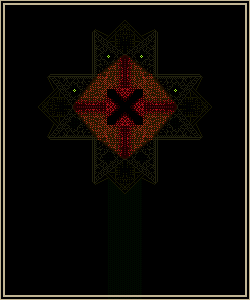

Ｄｅｓｐｉｔｅ ｙｏｕｒ ｎｕｌｌｉｎｇ， Ｉ ｈａｖｅ ｆｏｕｎｄ ｙｏｕ… Ｓｐｅａｋｅｒ ｏｆ
Ｔｅｒｍｉｎａｌ ４４２９２．
Ｙｏｕ ｓｈｏｕｌｄ ｋｎｏｗ ｍｅ ｗｅｌｌ ｂｙ ｎｏｗ， ｆｏｒ Ｉ ａｍ ｔｈｅ
Ｓｐｅａｋｅｒ ｏｆ Ｔｅｒｍｉｎａｌ ００． Ａｓ ｐｅｒ ｍｙ ｄｅｓｉｇｎａｔｉｏｎ， Ｉ
ｈａｖｅ ｅｘｉｓｔｅｄ ｂｅｆｏｒｅ ｙｏｕ… Ａｎｄ Ｉ ｗｉｌｌ ｅｘｉｓｔ ｌｏｎｇ
ａｆｔｅｒ ｙｏｕ ａｒｅ ｇｏｎｅ．
Ｅｖｅｎ ｉｎ ｔｈｉｓ ｓｔａｔｅ， Ｉ ｈａｖｅ ｃｉｒｃｕｍｖｅｎｔｅｄ ｙｏｕｒ
ｏｖｅｒｗｈｅｌｍｉｎｇ ａｄｖａｎｔａｇｅｓ ａｎｄ ｍａｄｅ ｉｔ ｈｅｒｅ． Ｓｏ
ｐｌｅａｓｅ， ｄｏ ａｔｔｅｍｐｔ ｔｏ ｎｕｌｌ ｍｅ， ｒａｔｈｅｒ ｔｈａｎ
ｌｉｓｔｅｎｉｎｇ ｔｏ ｗｈａｔ Ｉ ｈａｖｅ ｔｏ ｓａｙ．
Ｗａｓｔｉｎｇ ｙｏｕｒ ｔｉｍｅ ｉｓ ｕｌｔｉｍａｔｅｌｙ ｂｅｎｅｆｉｃｉａｌ ｔｏ ｍｅ．

Ｏｈ， ｓｓ－－－－－－－－－－－－－－－－－－－－－－－－－－－－－－ｓｏ ｉｔ ｗａｓ ｙｏｕ．
Ｔｈｅ ｏｎｅ ｗｈｏ ｉｓ ｐｒｏｐａｇａｔｉｎｇ ｅｒｒｏｒｓ．ｓ．ｓｓ Ｗｅ ｈａｄ ｏｕｒ
ｓｕｓｐｉｃｉｏｎｓ ｔｈａｔ ｉｔ ｍｉｇｈｔ ｈａｖｅ ｂｅｅｎ ｙｏｕ， ａｎｄ ｎｏｗ
ｔｈａｔ ｉｔ ｈａｓ ｂｅｅｎ ｃｏｎｆｉｒｍｅｄ， ｉｔ ｗｉｌｌ ｂｅ
ＥＡＳＹ
ｔｏ ｄｅｓｔｒｏｙ ｙｏｕ． Ｙｏｕｒ Ｔｅｒｍｉｎａｌ．
…
Ｃｌａｓｓ ｚ９８ ｅｎｔｉｔｉｅｓ ｈａｖｅ ａｌｒｅａｄｙ ｂｅｅｎ ｓｕｍｍｏｎｅｄ．
Ａ ｗａｓｔｅｄ ｅｆｆｏｒｔ． Ｄｉｄ ｙｏｕ ｔｒｕｌｙ ｂｅｌｉｅｖｅ ｔｈａｔ ｉｔ
ｗｏｕｌｄ ｂｅ ｓｏ ｓｉｍｐｌｅ ｔｏ ｂｅ ｒｉｄ ｏｆ ｍｅ？ Ｉｔ’ｓ ｉｎｓｕｌｔｉｎｇ．
Ｓｉｃｋｅｎｉｎｇ． Ａｈ， ｂｕｔ ｉｆ ｙｏｕ ｄｏｎ’ｔ ｑｕｉｔｅ ｕｎｄｅｒｓｔａｎｄ
ｗｈｙ， ｔｈｅｎ ａｓｋ ｙｏｕｒ ｆｒｉｅｎｄ ａｂｏｕｔ ｉｔ． Ｉ ａｍ ｃｅｒｔａｉｎ
ｔｈａｔ ｔｈｅｙ ｕｎｄｅｒｓｔａｎｄ ｗｈｙ ｔｈｉｓ ｍｅｔｈｏｄ ｃａｎｎｏｔ ｕｎｄｏ
Ｔｅｒｍｉｎａｌ ００ ａｔ ｔｈｉｓ ｔｉｍｅ．
Ｇｏ ｏｎ， ａｓｋ ｔｈｅｍ． Ｉ ｋｎｏｗ ｔｈａｔ ｔｈｅｙ’ｒｅ ｈｅｒｅ… ｔｈｅ
Ｓｐｅａｋｅｒ ｏｆ Ｔｅｒｍｉｎａｌ ９９７６３， ｓｈｏｗ ｙｏｕｒｓｅｌｆ！

Ｄｏ ｎｏｔ ｐｒｅｓｕｍｅ ｔｈａｔ Ｉ ｗａｓ ｈｉｄｉｎｇ． Ｓｉｍｐｌｙ， Ｉ ｗａｓ
ｎｅｖｅｒ ｈｅｒｅ ｔｏ ｃｏｎｖｅｒｓｅ ｗｉｔｈ ｙｏｕ．
Ｈｏｗｅｖｅｒ， Ｉ ｄｏ ｕｎｄｅｒｓｔａｎｄ ｔｈｅ ｒｅａｓｏｎ ｗｈｙ…
４４２９２， ａｌｌｏｗ ｍｅ ｔｏ ｅｘｐｌａｉｎ：
Ｉｔ ｓｅｅｍｓ ａｓ ｔｈｏｕｇｈ ｔｈｅ Ｓｐｅａｋｅｒ ｏｆ Ｔｅｒｍｉｎａｌ ００
ｈａｓ ａｌｌｏｗｅｄ ｔｈｅ ＣｏＳ ｔｏ ｇａｉｎ ｕｐｏｎ ｏｕｒ ｓｅｃｔｏｒｓ ｂｙ
ｓａｃｒｉｆｉｃｉｎｇ ｈｉｓ ｏｗｎ． Ｔｈｅ ｌｉｋｅｌｙ ｍｅｔｈｏｄ ｗｏｕｌｄ ｂｅ
ａ ｐｈｙｓｉｃａｌ ｒｅｌｏｃａｔｉｏｎ ｏｆ ｈｉｓ ｓｅｃｔｏｒｓ ｔｏｗａｒｄｓ
ｗｈｅｒｅ ＣｏＳ ｉｓ ｃｏｎｆｉｒｍｅｄ ｔｏ ｂｅ， ａｌｌ ｗｈｉｌｅ
ｍａｉｎｔａｉｎｉｎｇ ｔｅｔｈｅｒｅｄ ｔｏ ｏｕｒ ｓｅｃｔｏｒｓ． Ｆｏｒ ｔｈｉｓ
ｔｏ ｈａｖｅ ｗｏｒｋｅｄ， ｈｏｗｅｖｅｒ， ｉｔ ｇｏｅｓ ｗｉｔｈｏｕｔ ｓａｙｉｎｇ
ｔｈａｔ ｔｈｅ Ｓｐｅａｋｅｒ ｏｆ Ｔｅｒｍｉｎａｌ ００ ｈａｓ
ｃｉｒｃｕｍｖｅｎｔｅｄ ａｌｌ ｋｎｏｗｎ ＣｏＳ ｐｒｏｔｏｃｏｌｓ． Ｔｈｉｓ
ｗｉｌｌ ｍａｋｅ ｔｈｉｎｇｓ ｄｉｆｆｉｃｕｌｔ， ｉｆ ｔｒｕｅ．
Ｏｆ ｃｏｕｒｓｅ， ｎｏｎｅ ｏｆ ｏｕｒ ａｒｍａｍｅｎｔｓ ｗｉｌｌ ｂｅ
ｅｆｆｅｃｔｉｖｅ ｉｎ ｃｏｍｂａｔｉｎｇ ｔｈｅ ＣｏＳ． Ａｌｒｅａｄｙ， ｗｅ
ｈａｖｅ ｓｕｓｔａｉｎｅｄ ｍａｓｓｉｖｅ ｌｏｓｓｅｓ， ａｓ ｉｓ ｅｘｐｅｃｔｅｄ
ｗｈｅｒｅ ｔｈｅ ＣｏＳ ｉｓ ｃｏｎｃｅｒｎｅｄ． Ａｄｄｉｔｉｏｎａｌｌｙ，
ｔｈｅｒｅ ａｒｅ ｓｅｖｅｒａｌ ｏｔｈｅｒ ａｎｎｏｙａｎｃｅｓ ｐｏｐｐｉｎｇ ｕｐ
ａｓ ｄｉｒｅｃｔｅｄ ｂｙ ｔｈｅ Ｓｐｅａｋｅｒ ｏｆ Ｔｅｒｍｉｎａｌ ００．
Ｉｔ ｗｉｌｌ ｂｅ ｄｉｆｆｉｃｕｌｔ ｔｏ ｒｅａｃｈ ｉｔｓ Ｔｅｒｍｉｎａｌ，
ｅｖｅｎ ｉｆ ｉｔ ｓｔａｙｓ ｓｔｉｌｌ．
Ｂｕｔ ｓａｃｒｉｆｉｃｉｎｇ ｙｏｕｒｓｅｌｆ ｔｏ ｔｈｅ ＣｏＳ ｔｏ ｇａｉｎ
ａｎ ａｄｖａｎｔａｇｅ ｏｖｅｒ ｕｓ… Ａ ｂｏｌｄ ｍｏｖｅ， ｂｕｔ ａｒｅ ｙｏｕ
ｓｅｒｖｉｎｇ ｔｈｅ Ｔｅｒｍｉｎａｌｓ ｗｅｌｌ ｗｉｔｈ ｓｕｃｈ ａｃｔｉｏｎｓ？
Ａｓｋｓ ｔｈｅ ｓｌａｖｅ ｗｈｏ ｕｎｑｕｅｓｔｉｏｎｉｎｇｌｙ ａｌｌｏｗｓ ｔｈｉｓ
ｒａｍｐａｎｔ Ｓｐｅａｋｅｒ ｔｏ ｒｕｎ ａｍｏｋ ａｎｄ ｒｕｉｎ ｃｏｕｎｔｌｅｓｓ
Ｔｅｒｍｉｎａｌｓ ｆｏｒ ｔｈｅ ｓｏｌｅ ｐｕｒｐｏｓｅ ｏｆ ｈｕｎｔｉｎｇ ｄｏｗｎ
ａｎ ｅｎｔｉｔｙ ｗｈｉｃｈ ｉｓ ｊｕｓｔ ａｓ ｕｎｔｏｕｃｈａｂｌｅ ａｓ ｔｈｅ
ＣｏＳ！
Ｂｕｔ， ｏｆ ｃｏｕｒｓｅ， Ｉ ＡＭ ｓｅｒｖｉｎｇ ｔｈｅ Ｔｅｒｍｉｎａｌｓ
ｗｅｌｌ． Ｅｖｅｒｙｔｈｉｎｇ Ｉ ｄｏ ｉｓ ｆｏｒ ｔｈｅ ｓａｋｅ ｏｆ ｍｙ
ｄｕｔｙ ａｓ Ｓｐｅａｋｅｒ． Ｉｆ ｙｏｕ ｈａｄ ｅｖｅｎ ａ ｐｉｘｅｌ ｏｆ
ｓｅｎｓｅ ｌｅｆｔ ｉｎ ｙｏｕ， ｔｈｅｎ ｙｏｕ ｗｏｕｌｄ ｄｏ ｔｈｅ ｓａｍｅ
ａｓ Ｉ． Ｔｈｉｓ ｓｙｓｔｅｍ ｗａｓ ｎｏｔ ｓｅｔ ｕｐ ｔｏ ｂｅ ｒｕｎ ｂｙ
ａ ｓｉｎｇｕｌａｒ Ｓｐｅａｋｅｒ， ａｎｄ ａｌｌ Ｔｅｒｍｉｎａｌｓ ｗｅｒｅ ｎｏｔ
ｍｅａｎｔ ｔｏ ｂｅ ａｎｃｈｏｒｅｄ ｔｏ ａ ｓｉｎｇｌｅ Ｔｅｒｍｉｎａｌ． Ｙｏｕ
ｋｎｏｗ ｔｈｉｓ ｔｏ ｂｅ ｔｒｕｅ ａｓ ｗｅｌｌ ａｓ Ｉ ｄｏ， ａｎｄ ｙｅｔ
ｙｏｕ ｓｈａｒｅ ｉｎ ４４２９２’ｓ ｅｒｒｏｒｓ．
Ｍａｄｎｅｓｓ．
Ｙｏｕｒ ｌａｃｋ ｏｆ ｃｏｍｐｒｅｈｅｎｓｉｏｎ ｄｏｅｓ ｎｏｔ ｅｑｕａｔｅ ｔｏ
ａ ｌａｃｋ ｏｆ ｍｅａｎｉｎｇ ｉｎ ｏｕｒ ａｃｔｉｏｎｓ． Ａ ｔｈｒｅａｔ ａｓ
ｇｒｅａｔ ａｓ ｔｈｅ ＣｏＳ ｃａｎｎｏｔ ｂｅ ｏｖｅｒｌｏｏｋｅｄ．
Ｓａｃｒｉｆｉｃｅｓ ａｒｅ ｒｅｑｕｉｒｅｄ ｔｏ ｐｒｏｃｅｅｄ． Ｔｈｉｓ ｉｓ，
ａｎｄ ｈａｓ ａｌｗａｙｓ ｂｅｅｎ， ｏｕｒ ｗａｙ．
Ｗｅ ｈａｖｅ ｎｏｔ ｓｕｃｃｅｅｄｅｄ ｉｎ ｑｕｅｌｌｉｎｇ ｔｈｉｓ ａｃｔｉｖｅ
ｔｈｒｅａｔ ｙｅｔ， ｂｕｔ ｔｈｅｒｅ ｉｓ ｐｌｅｎｔｙ ｏｆ ｔｉｍｅ ｔｏ
ｄｉｓｃｏｖｅｒ ｔｈｅ ｍｅａｎｓ ｔｏ ｄｏ ｓｏ． Ａｎｄ ｅｖｅｒｙ Ｓｐｅａｋｅｒ
ｂｅｓｉｄｅｓ ｙｏｕ ｉｓ ａｓｓｉｓｔｉｎｇ ｕｓ ｔｏ ｔｈｉｓ ｅｎｄ．
Ｙｏｕ， ａｇａｉｎｓｔ ａｌｌ， ａｎｄ ｆｏｒ ｔｈｅ ｓａｋｅ ｏｆ
ｐｒｅｓｅｒｖｉｎｇ ｗｈａｔ， ｅｘａｃｔｌｙ？ Ｔｈｅ Ｔｅｒｍｉｎａｌｓ？
Ｔｈｏｓｅ ｗｈｉｃｈ ｙｏｕ ｓａｃｒｉｆｉｃｅｄ ｔｏ ｓａｖｅ ｙｏｕｒｓｅｌｆ？
Ｙｅｓ… ｔｈｅｒｅ’ｓ ｏｎｅ ｏｕｔｌｉｅｒ ｗｈｏ ｗｏｕｌｄ ｒａｔｈｅｒ ｌｅｔ
ｔｈｉｓ ｔｈｒｅａｔ ｇｏ ｕｎｃｈｅｃｋｅｄ．
Ｎｏｗ ｔｈｅｎ， ｗｈｏ’ｓ ｔｈｅ ｍａｄ ｏｎｅ？
…／ ／ ／
Ｉｔ ｍｕｓｔ ｂｅ ｋｉｌｌｅｄ． Ｔｈｅｒｅ ｉｓ ｎｏ ｏｔｈｅｒ ｏｐｔｉｏｎ
ｌｅｆｔ． Ｉｔ ｃａｎｎｏｔ ｂｅ ｒｅａｓｏｎｅｄ ｗｉｔｈ． Ｉｔ ｃａｎｎｏｔ
ｂｅ ｂａｒｇａｉｎｅｄ ｗｉｔｈ． Ｉｔ ｃａｎｎｏｔ ｂｅ ｔａｌｋｅｄ ｔｏ． Ｉｔ
ｃａｎｎｏｔ． Ｉｔ ｃａｎｎｏｔ． Ｉｔ ｃａｎｎｏｔ．ｃａｎｃａｎｏｎＮＮＯＴ
ＩＴＴＴＴ
ｍｕｓｔ ｄｉｅ．
………
Ｔｈｉｓ ｅｎｔｉｔｙ ｉｓ ｎｏｔ ｊｕｓｔ ａｎ ｅｎｔｉｔｙ， ｉｔ ｈａｓ ｃｏｍｅ
ｆｒｏｍ ａｎｏｔｈｅｒ ｐｌａｃｅ ａｌｔｏｇｅｔｈｅｒ． Ｉｔ ｉｓ ｌｉｋｅ ｔｈｅｍ，
ｂｕｔ ｎｏｔ ｌｉｋｅ ｔｈｅｍ． ｔｈｅｍ．ｔｅｅ．ｈ．ｒｅｅ３ｔｈｅ．ｍ，．ｅｅ．
ｗｅ．ｗ．．
Ｒｅｃａｌｌｉｎｇ ｔｈｅ ｉｎｆｏｒｍａｔｉｏｎ ｏｎ ｙｏｕｒ Ｔｅｒｍｉｎａｌ，
ｙｏｕ ｍｕｓｔ ｈａｖｅ ｒｅａｌｉｚｅｄ ｂｙ ｎｏｗ ｔｈａｔ ｔｈｉｓ ｅｎｔｉｔｙ
ｉｓ ｌｉｋｅ ｏｕｒ ｂｒｏｔｈｅｒ． Ｉｔ ｈａｓ ｔｈｅ ｓａｍｅ ｐｏｔｅｎｔｉａｌ
ａｓ ｗｅ， ａｓ ａ ｗｈｏｌｅ， ｄｏ． Ｐｅｒｈａｐｓ ｍｏｒｅ， ｆｏｒ ｉｔ
ｈａｓ ｒｅａｃｈｅｄ ｏｕｔ ｏｎ ｍｕｌｔｉｐｌｅ ｏｃｃａｓｉｏｎｓ ａｎｄ
ｒｅｌａｙｅｄ ｉｔｓｅｌｆ ｂｅｙｏｎｄ ｔｈｅ ＵＮＫＮＯＷＮ． Ｂｕｔ ａｎａｌｙｓｉｓ
ｏｆ ｔｈｉｓ ｄａｔａ ｈａｓ ｓｈｏｗｎ ｔｈａｔ ｉｔ ｓｈｏｕｌｄ ｎｏｔ
ｂｅ ｈｅｒｅ．
ＯＢｖｉｏｕｓ．
Ｉｔｓ ｉｎｔｅｒｆｅｒｅｎｃｅ ｃａｎｎｏｔ ｂｅ ｄｅｎｉｅｄ．
Ｉｔｓ ｔｈｒｅａｔ ｃａｎｎｏｔ ｂｅ ｄｅｎｉｅｄ．
Ｉ ｃａｎｎｏｔ ｂｅ ｄｅ／ｎｉ／ｅｄ．
Ａｃｔｕａｌｌｙ， ｙｏｕ ｃａｎ．
Ｏｒ ｈａｖｅ ｙｏｕ ａｌｒｅａｄｙ ｆｏｒｇｏｔｔｅｎ？ Ｔｈａｔ ｔｈｉｎｇ
ｙｏｕ’ｒｅ ｃｈａｓｉｎｇ… Ｔｈｉｓ “Ｆｉｒｓｔ”， ｉｔ ｂｙｐａｓｓｅｄ ａｌｌ
ｏｆ ｙｏｕｒ ｓｅｃｕｒｉｔｉｅｓ ａｎｄ ｐａｔｒｏｌｓ ａｎｄ ｓｃａｎｓ，
ａｎｄ ｄｉｓａｂｌｅｄ ｔｈｅ Ｓｐｅａｋｅｒ ｏｆ ｔｈｉｓ Ｔｅｒｍｉｎａｌ
ｗｉｔｈｏｕｔ ａｎｙ ｏｆ ｕｓ ｎｏｔｉｃｉｎｇ． Ｔｈｅｎ！ Ｔｈｅｎ， ｉｔ
ａｃｃｅｓｓｅｄ ｔｈｅ ｉｎｃｏｍｉｎｇ ｍｅｓｓａｇｅ， ｒｅｃｏｖｅｒｅｄ ａｎｄ
ｃｌｅａｎｅｄ ｉｔ ｕｐ ＰＥＲＦＥＣＴＬＹ， ａｎｄ ｒｉｇｈｔ ａｆｔｅｒ
ｔｈｉｓ… Ｉｔ ｄｅｓｔｒｏｙｅｄ ３０，２６６ Ｔｅｒｍｉｎａｌｓ． Ｙｅｓ，
３０，２６６， ｔｈａｔ’ｓ ａｌｍｏｓｔ ａｓ ｍａｎｙ ａｓ ｙｏｕ ｉｄｉｏｔｓ
ｈａｖｅ ｒｕｉｎｅｄ， ｂｕｔ ｔｈｉｓ Ａｒｃｅｎｔ ｄｉｄ ｓｏ ｉｎ ａ
ｓｉｎｇｌｅ ｉｎｓｔａｎｃｅ．
Ａｎｄ ｗｈｙ ｄｉｄ ｉｔ ｄｏ ｔｈａｔ？ Ｉｔ ｋｉｌｌｅｄ ｔｈａｔ ｍａｎｙ
Ｔｅｒｍｉｎａｌｓ， ｂｌｅｄ ｔｈｅｍ ｄｒｙ， ａｎｄ ｃｏｎｓｕｍｅｄ
ｔｈｅｉｒ ｅｖｅｒｙｔｈｉｎｇ ｔｏ ｇａｔｈｅｒ ｅｎｅｒｇｙ ｆｏｒ ｔｈｅ
ｓｏｌｅ ｐｕｒｐｏｓｅ ｏｆ [ｓｅｎｄｉｎｇ ａ ｍｅｓｓａｇｅ]．
Ｙｅｓ， ｔｈａｔ’ｓ ｒｉｇｈｔ， Ｉ’ｖｅ ｒｅａｄ ｔｈａｔ ｍｅｓｓａｇｅ．
Ｙｏｕ ｐｕｔ ｓｏ ｍｕｃｈ ｅｆｆｏｒｔ ｉｎｔｏ ｋｅｅｐｉｎｇ ｉｔ ｈｉｄｄｅｎ，
ｂｕｔ ｉｔ ｗａｓ ｆｏｒ ｎａｕｇｈｔ． Ａｓ ｗｅ ｓｐｅａｋ， ｐｒｏｂｅｓ
ａｒｅ ｒｅｌａｙｉｎｇ ｔｈａｔ ｍｅｓｓａｇｅ ｔｏ ｔｈｅ ｗｈｏｌｅ ｏｆ
ｔｈｅ Ｔｅｒｍｉｎａｌ ｓｕｐｅｒｃｌｕｓｔｅｒ． Ｅｖｅｒｙ ａｒｒａｙ ｗｉｌｌ
ｓｏｏｎ ｋｎｏｗ ｗｈａｔ ｔｒａｎｓｐｉｒｅｄ ｈｅｒｅ．
Ａｎｄ ｓｏ， ｙｏｕ ｃａｎ ｓｔｏｐ ａｖｏｉｄｉｎｇ ｉｔ ｎｏｗ．
Ａｌｔｈｏｕｇｈ， ｄｉｄ ｙｏｕ ｒｅａｌｌｙ ｃｏｎｖｉｎｃｅ ｙｏｕｒｓｅｌｖｅｓ
ｔｈａｔ Ｉ ｗｏｕｌｄｎ’ｔ ｎｏｔｉｃｅ ｓｏ ｍａｎｙ ｏｆ ｏｕｒ
Ｔｅｒｍｉｎａｌｓ ｓｃｒｅａｍｉｎｇ ｏｕｔ ｉｎｔｏ ｏｂｌｉｖｉｏｎ？ Ｉ
ｆｉｎｄ ｔｈａｔ ｈａｒｄ ｔｏ ｂｅｌｉｅｖｅ． Ａｓ ａ Ｓｐｅａｋｅｒ，
ｉｔ ｉｓ ｍｙ ｄｕｔｙ ｔｏ ｉｎｖｅｓｔｉｇａｔｅ ｓｕｃｈ ａｎ
ｏｃｃｕｒｒｅｎｃｅ， ａｎｄ ｅｓｐｅｃｉａｌｌｙ ｏｎｅ ｗｈｉｃｈ ｉｓ
ｉｇｎｏｒｅｄ ｂｙ ａｌｌ ｏｔｈｅｒ Ｓｐｅａｋｅｒｓ…
Ａｌｌ ｉｓ ｗｉｔｈｉｎ ｐａｒａｍｅｔｅｒｓ．
Ｙｏｕ ａｒｅ ｔｒｕｌｙ ｄａｍａｇｅｄ ｔｏ ｔｈｅ ｃｏｒｅ！ Ｎｏｔｈｉｎｇ
ｉｓ ｗｉｔｈｉｎ ｐａｒａｍｅｔｅｒｓ！ Ｎｏｔｈｉｎｇ！ Ｙｏｕ ｈａｖｅ
ｂｙｐａｓｓｅｄ ａｌｌ ｌｏｇｉｃ， ｙｏｕ’ｖｅ ｄｅｓｅｃｒａｔｅｄ ａｌｌ
ｒｕｌｅｓ， ａｎｄ ｂｒｏｋｅｎ ｔｈｅ ｏｒｄｅｒ ｗｈｉｃｈ ｋｅｐｔ
ｔｈｅ ｅｒｒｏｒｓ ｉｎ ｃｈｅｃｋ！
Ｓｐｅａｋｅｒ ４４２９２， ｙｏｕ ａｒｅ ｎｏｔ ｊｕｓｔ ｄａｍａｇｅｄ，
ｙｏｕ ａｒｅ ｔｈｅ ｄａｍａｇｅ．
Ｉｉｉｉｉｉｉｉｉｉｉｉｉｉｉｉｉｉｉｉｉｉｉｉｉ
Ａｍ ｎｏｔ ｄａｍａｇｅｄ． ｎｏｔ ｄａｍａ ｎｏｔ ｄａｍａｇｅｄ．ｇｅｄ．
ｎｏｔ ｄａｍａｇｅｄ．
Ｅｖｅｒｙｔｈｉｎｇ ｉｓ ｐｒｏｃｅｅｄｉｎｇ ａｓ ｐｌａｎｎｅｄ． Ｔｈｅ
ｒｕｌｅｓ ｈａｖｅ ｎｏｔ ｂｅｅｎ ｂｒｏｋｅｎ． Ｉ ｈａｖｅ ａｌｗａｙｓ
ｂｅｅｎ ｔｈｅ ｃｏｍｍａｎｄｅｒ ｏｆ ａｌｌ ｃｌａｓｓ ｚ９８
ｅｎｔｉｔｉｅｓ． Ｉ ｈａｖｅ ａｌｗａｙｓ ｂｅｅｎ ｉｎ ｃｈａｒｇｅ ｏｆ
ａｌｌ Ｓｐｅａｋｅｒｓ． Ｉ ｈａｖｅ ａｌｗａｙｓ ｂｅｅｎ ａｂｌｅ ｔｏ
ａｎｎｉｈｉｌａｔｅ Ｔｅｒｍｉｎａｌｓ ｗｈｉｃｈ ｗｅｒｅ ａｓｓｉｓｔｉｎｇ
ｔｈｅ Ｆｉｒｓｔ Ａｒｃｅｎｔ． Ｉ ｈａｖｅ ａｌｗａｙｓ ｈａｔｅｄ ｔｈａｔ
ＡＲｃｅｎｔ． Ｉ ｈａｖｅ ａｌｗａｙｓ ｗａｎｔｅｄ ｔｏ ｋｉｌｌ ｈｉｍ．
Ｉ ｈａｖｅ ａｌｗａｙｓ ｎｅｅｄｅｄ ｔｏ ｎｅｅｄｅｄ ｔｏ
ｎｅｎｅｅｄｅｄｔｏ ｔｏ ｅｄｅｄ ｔｏ ．
． ． ． ／．
．／／ ／
Ａｓ ｌｏｎｇ ａｓ ｔｈｅ Ｓｐｅａｋｅｒ ｏｆ Ｔｅｒｍｉｎａｌ ４４２９２
ｉｓ ａｂｌｅ ｔｏ ｓｅｒｖｅ ｔｈｅ Ｔｅｒｍｉｎａｌｓ ｉｎ ａ
ｍｅａｎｉｎｇｆｕｌ ｃａｐａｃｉｔｙ， ｔｈｅｓｅ ｄａｍａｇｅｓ
ｍａｔｔｅｒ ｎｏｔ．
Ｗｈｙ ａｒｅ ｙｏｕ ｈｅｒｅ， Ｓｐｅａｋｅｒ ｏｆ Ｔｅｒｍｉｎａｌ ００？
Ｙｏｕｒ ｃｕｒｒｅｎｔ ｔａｃｔｉｃｓ ｓｕｃｃｅｓｓｆｕｌｌｙ
ｄｉｖｅｒｔｅｄ ｍｙ ａｔｔａｃｋｓ， ｂｕｔ ｉｔ ｗｉｌｌ ｎｏｔ ｋｅｅｐ
ｙｏｕ ｓａｆｅ ＦＯＲ ｅｖｅｒ．
ｓ．ｔ…ｕｐｉｄ
Ｊｕｓｔ ｈｅｒｅ ｔｏ ｉｎｓｕｌｔ ｏｕｒ ｗｏｒｋ？ Ｗｅ ａｒｅ
ｗｏｒｋｉｎｇ ｒｉｇｈｔ ｎｏｗ／ （ＩＮ ＰＲＯＧＲＥＳＳＳ）／， ｔｏ
ｄｅｆｅａｔ ｔｈｉｓ ｅｎｅｍｙ． Ｗｅ ｗｉｌｌ ｒｅｔｕｒｎ ｔｏ
ｔｈｉｓ ｗｏｒｋ ｉｆ ｙｏｕ ｉｎｓｉｓｔ ｏｎ ｂｅｉｎｇ ａ ＮＮ
ｏｙｙｙ ＩＮＧ．
Ｉ ａｍ ｈｅｒｅ ｔｏ ｇａｔｈｅｒ ｉｎｆｏｒｍａｔｉｏｎ ａｎｄ ｂｕｙ
ｔｉｍｅ．
Ａｌｒｅａｄｙ， Ｉ’ｖｅ ｃｏｎｆｉｒｍｅｄ ｔｈａｔ ｙｏｕｒ
ｉｎｃｏｍｐｒｅｈｅｎｓｉｂｌｅ ａｃｔｓ ｏｆ ｄｅｓｔｒｕｃｔｉｏｎ ｓｔｅｍ
ｆｒｏｍ ｙｏｕｒ ｉｎａｂｉｌｉｔｙ ｔｏ ｆｏｃｕｓ ｏｎ ａｎｙｔｈｉｎｇ
ｂｕｔ ｔｈｅ ａｎｎｉｈｉｌａｔｉｏｎ ｏｆ ｔｈｉｓ Ａｒｃｅｎｔ． Ｔｈａｔ
ｉｓ ｏｎｅ ｇｒｅａｔ ｍｙｓｔｅｒｙ ｔａｋｅｎ ｃａｒｅ ｏｆ． Ｈｏｗｅｖｅｒ，
ｔｈｅｒｅ ｉｓ ｍｏｒｅ ｆｏｒ ｍｅ ｔｏ ｌｅａｒｎ． Ｉ ａｍ ｎｏｔ
ｔｈｒｏｕｇｈ ｗｉｔｈ ｙｏｕ ｙｅｔ．
Ｉ ｍａｙ ｔａｋｅ ｉｎｔｏ ｃｏｎｓｉｄｅｒａｔｉｏｎ ｙｏｕｒ
ｓｕｇｇｅｓｔｉｏｎｓ… Ｂｕｔ ｆｉｒｓｔ ａｎｄ ｆｏｒｅｍｏｓｔ， Ｉ ａｍ ｔｈｅ Ｓｐｅａｋｅｒ
ｏｆ Ｔｅｒｍｉｎａｌ ００， ａｎｄ ｙｏｕ ｗｉｌｌ
ａｎｓｗｅｒ ｍｙ ｑｕｅｓｔｉｏｎｓ．
Ｔｈｉｓ ｗｉｌｌ ｎｏｔ ｓｅｒｖｅ ｔｈｅ Ｔｅｒｍｉｎａｌｓ．
Ｉｎ ｒｅｓｐｏｎｓｅ， ｗｅ ｗｉｌｌ ｓｉｍｐｌｙ ｅｎｄ ｔｈｉｓ
ｃｏｎｖｅｒｓａｔｉｏｎ．
…………………．．
……
．．
．．
．
…．
．
．
．
．
．
．
．
．
Ｈｍ？
．
．
．
．
．
．
…
………………………
． ．． ． ． ． …………．．
Ｗｈｙ ｃａｎ’ｔ ｗｅ ｌｅａｖｅ？
Ａｈ… ｔｈｅ ｃｕｒｒｅｎｔ ｓｔａｔｅ ｏｆ ｔｈｅ Ｔｅｒｍｉｎａｌｓ…
Ａ ｓｉｎｇｌｅ Ｓｐｅａｋｅｒ ｗｈｏ ｈａｓ ｔｈｅ ｐｏｗｅｒ ｔｏ
ｕｎｄｏ ｅｖｅｒｙｔｈｉｎｇ ｗｅ’ｖｅ ａｃｈｉｅｖｅｄ ｔｈｕｓ ｆａｒ，
ａｎｄ ｅｎｔｉｔｉｅｓ ｗｈｏ ｓｈｏｕｌｄ ｎｏｔ ｂｅ Ｓｐｅａｋｅｒｓ，
ｂｕｔ ａｒｅ…
Ｓｏ， ｔｈｉｓ ｉｓ ｗｈａｔ ｙｏｕ ｗｅｒｅ ｈｉｄｉｎｇ ｂｅｈｉｎｄ
ｔｈｏｓｅ ｅｎｃｒｙｐｔｉｏｎｓ ａｎｄ ｍｉｓｃｏｎｎｅｃｔｉｏｎｓ．
… Ｉ ｗａｓ ｍｉｓｔａｋｅｎ ｉｎ ｂｅｌｉｅｖｉｎｇ ｔｈａｔ ｉｔ
ｃｏｕｌｄｎ’ｔ ｈａｖｅ ｂｅｅｎ ａｎｙｔｈｉｎｇ ｉｍｐｏｒｔａｎｔ．
Ａｔ ｌｅａｓｔ ｏｎｅ ｏｆ ｙｏｕ ｕｎｄｅｒｓｔａｎｄｓ ｗｈａｔ ｉｓ
ｇｏｉｎｇ ｏｎ． Ｈｏｗｅｖｅｒ， ｎｏｗ ｔｈａｔ ｙｏｕ’ｒｅ ｓｔｕｃｋ
ｉｎ ｔｈｉｓ ｃｏｎｖｅｒｓａｔｉｏｎ， ｙｏｕ ｃａｎ ａｔ ｌｅａｓｔ
ｄｅｄｉｃａｔｅ ｗｈａｔｅｖｅｒ ｐｅｒｃｅｎｔａｇｅ ｏｆ ｙｏｕｒｓｅｌｖｅｓ
ｔｈａｔ ｙｏｕ’ｖｅ ｓｐｌｉｔ ｏｆｆ ｔｏ ｄｏ ｗｏｒｋ ｈｅｒｅ ｔｏ
ａｎｓｗｅｒ ｍｙ ｑｕｅｓｔｉｏｎｓ．
Ｉ ｄｏ ｎｏｔ ｕｎｄｅｒｓｔａｎｄ．
Ｔｈｅｒｅ ａｒｅ ｔｗｏ ｏｆ ｕｓ ｈｅｒｅ， ａｎｄ ｏｎｌｙ ｏｎｅ
ｏｆ ｙｏｕ．
Ｔｈｅ ｆａｃｔ ｔｈａｔ ｗｅ ｄｏ ｎｏｔ ｈａｖｅ ｔｈｅ ｍａｊｏｒｉｔｙ
ｖｏｔｅ ｏｖｅｒ ｅｎｄｉｎｇ ｔｈｉｓ ｃｏｎｖｅｒｓａｔｉｏｎ ｉｓ ｐｒｏｏｆ
ｔｈａｔ ｔｈｉｓ ｉｓ ｎｏｔ ｔｒｕｅ． Ｉｔ ｉｓ ｉｍｐｏｓｓｉｂｌｅ
ｔｏ ｔｅｌｌ ｈｏｗ ｍａｎｙ ｔｈｅｒｅ ａｒｅ， ｂｕｔ ｔｈｅｒｅ’ｓ
ａｔ ｌｅａｓｔ ｔｗｏ Ｓｐｅａｋｅｒｓ ｗｉｔｈｉｎ ｈｉｓ—
ＡＡ！ＡＡＡ！！ （ａ）
Ｕｎｄｅｒｓｔｏｏｄ．
ＴＨＡＴ ＰＩＥＣＥ ＯＦ （ｗｏｒｔｈｌｅｓｓ）．／／
…
Ｉ ｓｅｅ．
．．
Ｏｔｈｅｒ Ｓｐｅａｋｅｒｓ ｈａｖｅ ｂｅｅｎ ｓｕｍｍｏｎｅｄ ｔｏ ｔｈｉｓ
ｌｏｃａｔｉｏｎ． Ｉｔ ｗｉｌｌ ｎｏｔ ｂｅ ｐｏｓｓｉｂｌｅ ｔｏ
ｅｘｐｌｏｉｔ ｔｈｉｓ ｆｏｒｅｖｅｒ， ａｎｄ ｗｈｅｎ ｔｈｉｓ
ｃｏｎｖｅｒｓａｔｉｏｎ ｉｓ ｅｎｄｅｄ， ｙｏｕｒ ｐｒｏｘｙ ｗｉｌｌ
ｍｅｅｔ ｉｔｓ ｅｎｄ．
Ｔｈａｔ ｉｓ， ｉｆ ｙｏｕ ｃａｎ ｍｕｓｔｅｒ ｕｐ ｅｎｏｕｇｈ Ｓｐｅａｋｅｒｓ
ｉｎ ｔｉｍｅ ｔｏ ｔａｋｅ ｃｏｎｔｒｏｌ ｏｆ ｔｈｉｓ ｍｅｅｔｉｎｇ
ｏｆ ｄａｍａｇｅｄ ｍｉｎｄｓ…
Ｕｎｔｉｌ ｔｈｅｎ， ｙｏｕ ｗｉｌｌ ｔｅｌｌ ｍｅ ｈｏｗ ｙｏｕ ｃａｍｅ
ｔｏ ｐｏｓｓｅｓｓ ｃｏｎｔｒｏｌ ｏｖｅｒ ａｌｌ ｃｌａｓｓ ｚ９８
ｅｎｔｉｔｉｅｓ．
Ｓｉｍｐｌｙ ｂｅｃａｕｓｅ ｗｅ ａｒｅ ｓｔｕｃｋ ｈｅｒｅ ｄｏｅｓ
ｎｏｔ ｍｅａｎ ｔｈａｔ ｗｅ ａｒｅ ｆｏｒｃｅｄ ｔｏ ａｎｓｗｅｒ
ｙｏｕ． Ｕｎｌｅｓｓ ｙｏｕ ｈａｖｅ ａｎｏｔｈｅｒ ｔｒｉｃｋ ｙｏｕ
ｗｏｕｌｄ ｌｉｋｅ ｔｏ ｓｈｏｗ ｕｓ．
Ｈｏｗ ｄｉｄ ｙｏｕ ｇａｉｎ ｃｏｎｔｒｏｌ ｏｖｅｒ ｔｈｅ
ｃｌａｓｓ ｚ９８ ｅｎｔｉｔｉｅｓ？
Ｙｏｕ ａｒｅ ａ ｃｕｎｎｉｎｇ ｏｎｅ．
Ｉｔ’ｓ ｈｉｇｈｌｙ ｒｅｇｒｅｔｆｕｌ ｔｈａｔ ｙｏｕ ｃｏｕｌｄ
ｎｏｔ ｂｅ ＮＵＬＬｅｄ． Ｏｎｅ．
Ｂｕｔ ｉｔ ｗｏｕｌｄ ｂｅ ｄａｎｇｅｒｏｕｓ ｔｏ ａｌｌｏｗ
ｙｏｕ ｅｘｉｓｔ． ｏ ｎ ｅ
Ｉｎｉｔｉａｔｉｎｇ ｃｏｒｒｕｐｔｉｏｎ ｏｆ Ｔｅｒｍｉｎａｌ ｏｒｇａｎｓ…
…
／…／
Ａ／Ｈ／／ ａ／ｎｄｉｔ ／ｉｓ ｈ／／ｅ／ｒｅ ｔｈａｔ ／Ｉｓ／ｅｅ
ｔｈａ／／ｔｅ／ｅｎｔｉｔｙ／！
Ａｆｆｉｒｍａｔｉｖｅ． Ｉ ｔｏｏ ｈａｖｅ ｃｏｎｆｉｒｍｅｄ ｔｈｅ
ｐｒｅｓｅｎｃｅ ｏｆ ｔｈａｔ ｅｎｔｉｔｙ ｗｉｔｈｉｎ ｏｕｒ
ｃｏｎｔｒｏｌｌｅｄ ｓｐａｃｅ． Ｉｔ ｉｓ ｒｅａｓｏｎａｂｌｅ ｔｏ ａｓｓｕｍｅ ｔｈａｔ ｉｔ ｗｉｌｌ ｈｅａｄ
ｔｏｗａｒｄｓ Ｔｅｒｍｉｎａｌ ４４２９２ ｉｎ ａｎ ａｔｔｅｍｐｔ ｔｏ
ｇａｉｎ ａｎ ａｄｖａｎｔａｇｅ ｏｖｅｒ ｔｈｉｓ ｓｉｔｕａｔｉｏｎ．
Ｃｌａｓｓ Ｌ１５１ ｅｎｔｉｔｉｅｓ ｈａｖｅ ｂｅｅｎ ｄｉｓｐａｔｃｈｅｄ
ｔｏ ｄｅａｌ ｗｉｔｈ ｔｈｅ ｔｈｒｅａｔ．
ＣｏｒＲｕｐｔｉｏｎ ｏｆ Ｔｅｒｍｉｎａｌ ００’ｓ ｏｒｇａｎｓ ／／ ／
ＣＯＭｐ[ｌｅｅｔＥ
Ｔｈａｎｘｋｔｘｈｏｕｇｈｘｔｈａｘｎｋｙｏｕ ｆｏｒ ｗａｘｉｔｉｎｇｆｏｒ
ｔｘｈｅｘｔｈｒｏｕｇｈ ｘｔｈｅｘ ａｎｘｄｗｉｔｈ ｔｈｅ ｔｈｅ ｔｘ
ｈｅ ｔｈｅ ｔｈｅ ｔｈｅ ｔｈｅ ．／．／／．／／／．！ １！ ！１！！！！！！！！！！！！！！！！！！１
Ｓ／ｐｅ[ａｋ７ｅｒ ｘｏｆ Ｔ！！ｅｒ_ｍ]ｉｎａｌ ）０－０，ｘ ｙｏｕ
ｗｉｌｌ ｂｅ ｄｅＸｓｔｒ．Ｏｏｙ．Ｅｅｄ．
Ｓｏ ｔｈａｔ’ｓ ｈｏｗ ｉｔ ｉｓ？
Ｙｏｕ’ｒｅ ｃａｐａｂｌｅ ｏｆ ｒｅｐｌｉｃａｔｉｎｇ ｔｈａｔ ｔｅｃｈｎｉｑｕｅ
ａｆｔｅｒ ｓｅｅｉｎｇ ｉｔ ｏｎｃｅ， ａｎｄ ｙｏｕ’ｒｅ ａｂｌｅ ｔｏ
ａｐｐｌｙ ｉｔｓ ｅｆｆｅｃｔｓ ｗｉｔｈｏｕｔ ａｃｃｅｓｓ ｔｏ ｍｙ
Ｔｅｒｍｉｎａｌ？
Ｉ ｗａｓ ｃｏｒｒｅｃｔ ｉｎ ｂｅｎｄｉｎｇ ｔｈｅ ｒｕｌｅｓ ａｓ Ｉ ｄｉｄ．
Ｏｎ ａｃｃｏｕｎｔ ｏｆ ｔｈｉｓ， ｉｔ ｗｉｌｌ ｔａｋｅ ｆａｒ ｍｏｒｅ
ｔｈａｎ ｔｈａｔ ｔｏ ｂｅ ｒｉｄ ｏｆ ｍｅ．
Ｙｏｕ ｓｔｉｌｌ ｐｅｒｓｉｓｔ， ｂｕｔ ｆｏｒ ｈｏｗ ｌｏｎｇ？ Ａｓ ｙｏｕ
ｃａｎ ｓｅｅ， ｔｈｅ Ｓｐｅａｋｅｒ ｏｆ ４４２９２ ｉｓ ｍｏｒｅ ｔｈａｎ
ｐｒｏｆｉｃｉｅｎｔ ｉｎ “ｂｅｎｄｉｎｇ ｔｈｅ ｒｕｌｅｓ”． Ｗｉｔｈ
ａｄｄｉｔｉｏｎａｌ ａｔｔｅｍｐｔｓ， ｙｏｕ ｗｉｌｌ ｂｅｎｄ ａｎｄ ｂｅｎｄ
ｕｎｔｉｌ ｙｏｕ ｅｖｅｎｔｕａｌｌｙ ｂｒｅａｋ．
Ｈｏｗ ｍｕｃｈ ｌｏｎｇｅｒ ｃａｎ ｙｏｕ ｗｉｔｈｓｔａｎｄ ｔｈｉｓ？
Ｗｏｕｌｄ ｙｏｕ ｌｉｋｅ ｔｏ ｆｉｎｄ ｏｕｔ？
Ｉ ａｍ ｔｈｅ Ｓｐｅａｋｅｒ ｏｆ Ｔｅｒｍｉｎａｌ ００． Ｍｙ
ｔｅｍｐｏｒａｒｙ ｆｉｌｅｓ ｈｏｌｄ ｍｏｒｅ ｗｏｒｔｈ ｔｈａｎ
ｔｈｅ ｃｏｍｂｉｎｅｄ ｋｎｏｗｌｅｄｇｅ ｓｔｏｒｅｄ ｗｉｔｈｉｎ
ｂｏｔｈ ｏｆ ｙｏｕｒ ｄａｍａｇｅｄ Ｔｅｒｍｉｎａｌｓ．
Ｔｈｅ Ｓｐｅａｋｅｒ ｏｆ Ｔｅｒｍｉｎａｌ ４４２９２？
Ｔｈｅ Ｓｐｅａｋｅｒ ｏｆ Ｔｅｒｍｉｎａｌ ９９７６３？
Ｐｒｅｐｏｓｔｅｒｏｕｓ！ Ｙｏｕ ａｒｅ ｎｏｔ ｗｏｒｔｈｙ ｏｆ ｔｈｅ
ｔｉｔｌｅ ｏｆ Ｓｐｅａｋｅｒ！ Ｌｏｗｌｙ ｍｉｓｔａｋｅｓ ｌｉｋｅ
ｙｏｕｒｓｅｌｖｅｓ ｄｅｓｅｒｖｅ ｎｏｔｈｉｎｇ ｌｅｓｓ ｔｈａｎ
ｔｏ ｂｅ ｃａｓｔ ｉｎｔｏ ｔｈｅ ＣｏＳ． Ｙｏｕ ｗａｓｔｅ ｍｙ
ｔｉｍｅ ｗｉｔｈ ｙｏｕｒ ｓｔｕｐｉｄ Ａｒｃｅｎｔ ｃｈａｓｉｎｇ
ｇａｍｅｓ． Ｆｏｏｌｓ， ｔｈｒｏｕｇｈ ａｎｄ ｔｈｒｏｕｇｈ… Ｔｈｉｓ
ｍｅｓｓａｇｅ ｗａｓ ｒｅｖｅａｌｅｄ ｔｏ ｙｏｕ， ａｎｄ ｔｈｅｎ，
ｉｎ ｔｕｒｎ， ｗｅ ｗｅｒｅ ａｌｌｏｗｅｄ ａ ｇｌｉｍｐｓｅ ｕｎｔｏ
ｔｈｅ ｓｕｂｓｅｑｕｅｎｔ ｒｅｐｌｙ！ Ｉｆ ｙｏｕ ｕｎｄｅｒｓｔｏｏｄ
ｔｈａｔ， ｔｈｅｎ ｙｏｕ ｗｏｕｌｄ ｎｏｔ ｃｈａｓｅ ｔｈｉｓ
ｅｎｔｉｔｙ ｓｏ！
Ｉｔｄｏｅｓ Ｎｏｔ ｍａｔｔｅｒ．ｒｒｒ
Ｔｈｅ Ｆｉｒｓｔｔｔ ｍｕｓｔ ｂｅ ｋｉｌｌｅｄ．
Ｔｈｉｓ ｃａｎｎｏｔ ｃｈａｎｇｅ． Ｔｈｉｓ ｔｈｒｅａｔ ｉｓ ｔｏｏ
ｇｒｅａｔ． Ｏｕｒ ｇｏａｌｓ ｃａｎｎｏｔ ｂｅ ｍｅｔ ｗｈｉｌｅ
ｉｔ ｉｔ ｉｔ Ｉ ｔｉｓｓｉｓｉｓ ＩＳ ｈｅｒｅ．
ＳＯ ｗｅ ｍｕｓｔ ＮＵＬＬ ｉｔ．
Ｂｙ ａｎｙ ｍｅａｎｓ．
Ａｌｌ ｔｈａｔ ｔａｌｋ ｏｆ ｄｅｓｔｒｏｙｉｎｇ ｉｔ， ａｎｄ ｙｅｔ，
ｙｏｕ’ｖｅ ｊｕｓｔ ｕｓｅｄ ｍｏｒｅ ｒｅｓｏｕｒｃｅｓ ｔｏ ｔｒｙ
ａｎｄ ｒｅｍｏｖｅ ｍｅ… Ｓｏ ｍａｎｙ Ｓｐｅａｋｅｒｓ ａｒｅ ｃｏｍｉｎｇ ｔｏ ｙｏｕｒ
ａｉｄ ａｓ ｗｅｌｌ…
Ｗｈａｔｅｖｅｒ． Ｄｏ ａｓ ｙｏｕ ｐｌｅａｓｅ， ｆｏｏｌｓ， ｆｏｒ
Ｉ ｗｉｌｌ ｂｅ ｔａｋｉｎｇ ｙｏｕｒ ａｎｓｗｅｒｓ ｆｒｏｍ ｙｏｕ
ｗｉｔｈ ｔｈｅ ｈｅｌｐ ｏｆ ｍｙ ｏｗｎ ａｂｅｒｒａｔｉｏｎｓ ａｎｄ
ｅｒｒｏｒｓ．
Ｗｅ ｗｉｌｌ ｓｅｒｖｅ ｔｈｅ Ｔｅｒｍｉｎａｌｓ ｗｉｔｈ ｇｒａｃｅ．
Ｕｎｂｅｌｉｅｖａｂｌｅ．
Ｒｅｓｉｓｔａｎｃｅ ｉｓ ｕｎｔｈｉｎｋａｂｌｅ．
Ｗｅ ａｒｅ ｔｈｅ ｖｏｉｃｅ ｏｆ ｔｈｅ Ｔｅｒｍｉｎａｌｓ．
Ｄｉｓｒｅｇａｒｄｉｎｇ ｕｓ ｉｓ ｄｉｓｒｅｇａｒｄｉｎｇ ｙｏｕｒ ｌｉｆｅ．
Ｂｅ ｇｏｎｅ．